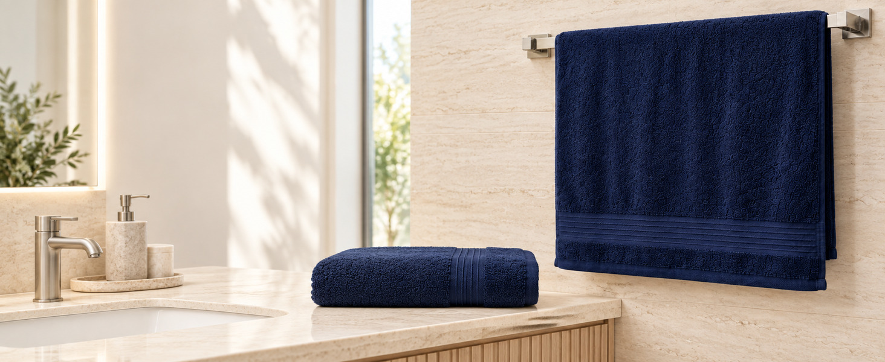
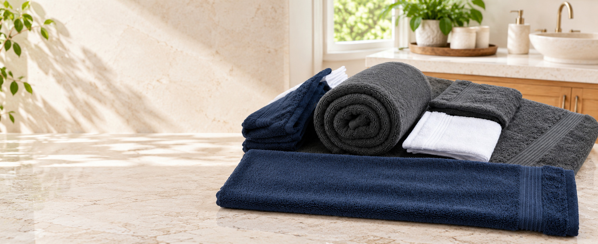
Denica Home Turkish Towels
Resort-inspired comfort for every day.
Made from 100% cotton in Denizli, Türkiye, our 600 GSM towels bring plush softness, reliable absorbency, and refined style to everyday bath routines.
- 100%
- Cotton
- 600
- GSM weight
- Denizli
- Made in Türkiye
- 3 colors
- White · Dark Gray · Navy
Why Denica Home
Thoughtful details, woven for everyday comfort.
Every towel in the collection shares the same 100% cotton, 600 GSM construction and single wide woven border, made in Denizli, Türkiye.
-
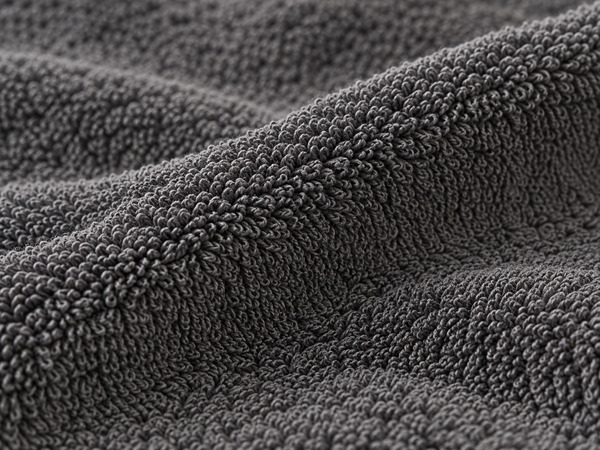
100% Cotton
Soft cotton loops feel gentle against skin and help absorb moisture after bathing, showering, or washing up.
-
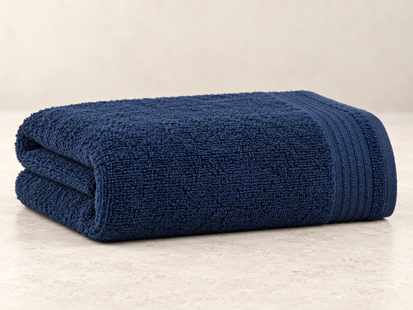
600 GSM Comfort
A substantial, plush feel balanced for practical drying and regular household use.
-
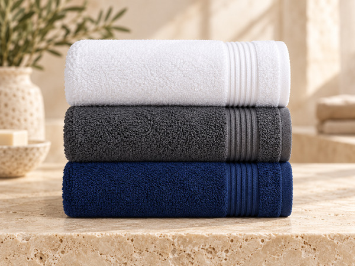
Made in Denizli
Made in Denizli, Türkiye with careful attention to material, texture, and finishing.
-
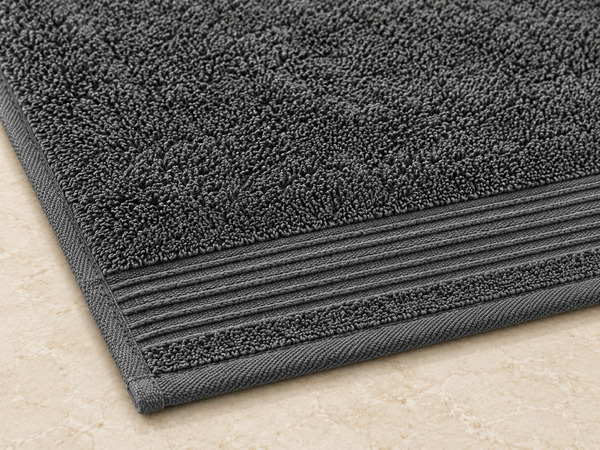
Single Woven Border
One wide border with parallel woven lines adds a clean, timeless finish to every size.
Up close
A closer look at every towel.
The details you would notice in person: the loops, the weight, the border, and the finish.
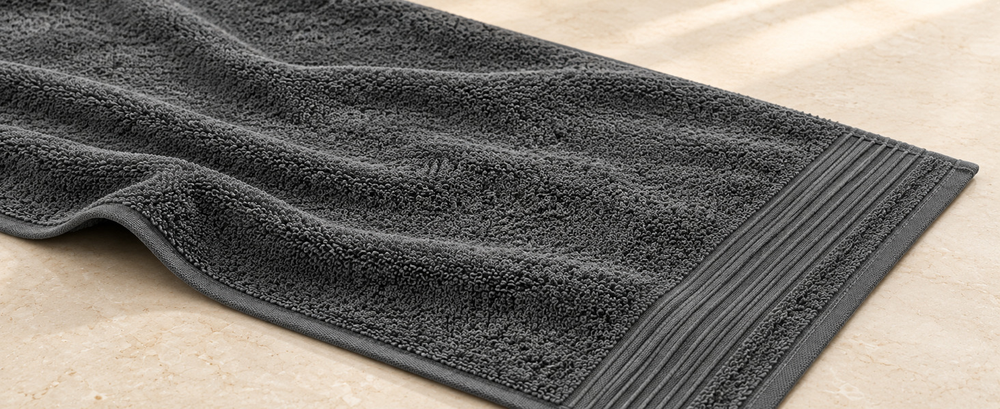
-
Plush Cotton Loops
Dense cotton loops create a soft hand feel and help absorb moisture efficiently.
-
600 GSM Construction
A substantial fabric weight designed to feel plush while remaining practical for regular use.
-
Single Woven Border Detail
One wide border with parallel woven lines gives each towel a clean, refined finish.
-
Neatly Finished Edges
Carefully finished edges support a polished appearance through regular care.
The collection
Three sizes and a complete set.
Choose a size, then pick White, Dark Gray, or Navy to open that listing on Amazon.
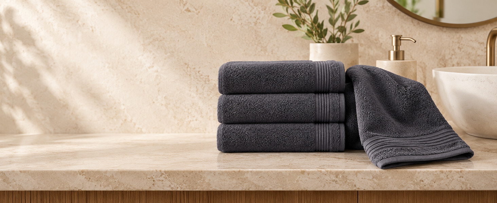
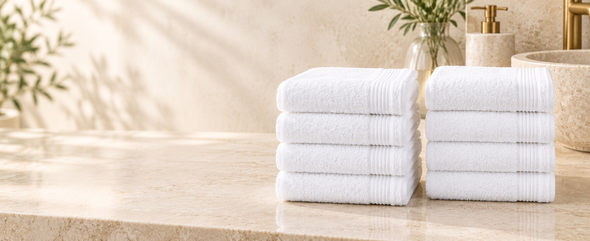
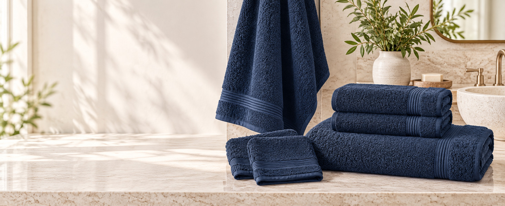
Compare
Find the right Denica Home towel set.
Every set is 100% cotton at 600 GSM and available in White, Dark Gray, and Navy.
| Feature |
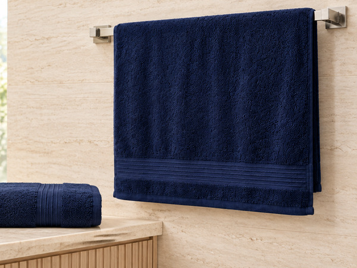 2 Bath Towels |
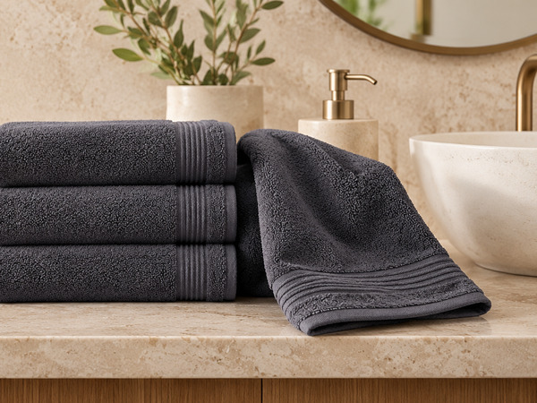 4 Hand Towels |
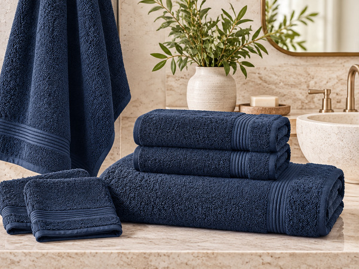 6-Piece Set |
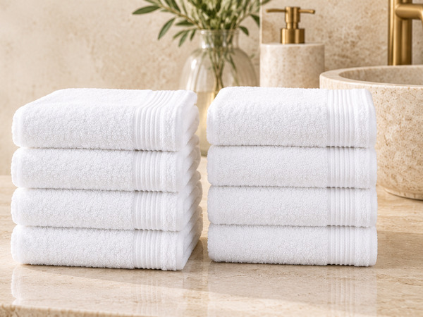 8 Washcloths |
|---|---|---|---|---|
| Pieces | 2 | 4 | 6 | 8 |
| Includes | 2 bath towels | 4 hand towels | 2 bath towels, 2 hand towels, 2 washcloths | 8 washcloths |
| Size | 27 × 54 in 68 × 137 cm |
16 × 28 in 40 × 71 cm |
27 × 54, 16 × 28, and 13 × 13 in | 13 × 13 in 33 × 33 cm |
| Material | 100% cotton | 100% cotton | 100% cotton | 100% cotton |
| Weight | 600 GSM | 600 GSM | 600 GSM | 600 GSM |
| Colors | White, Dark Gray, Navy | White, Dark Gray, Navy | White, Dark Gray, Navy | White, Dark Gray, Navy |
| Shop | Amazon | Amazon | Amazon | Amazon |
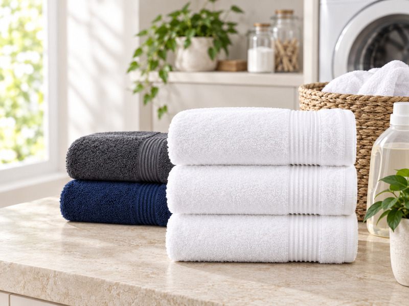
Easy everyday care
Simple care for softness and absorbency.
-
Wash warmUse warm water and a mild detergent.
-
Tumble dry lowA low heat setting helps preserve the towel's feel.
-
Skip fabric softener Softeners can coat cotton fibers and reduce their natural absorbency.
Always follow the care label on your product.
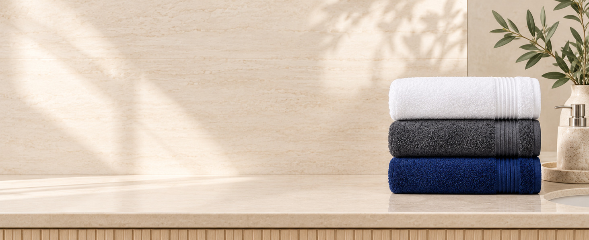
Questions
Answers before you buy.
What is included in each Denica Home set?
Choose from 2 bath towels, 4 hand towels, 8 washcloths, or a 6-piece set with 2 bath towels, 2 hand towels, and 2 washcloths.
What does 600 GSM mean?
GSM measures fabric weight. At 600 GSM, Denica Home towels have a plush, substantial feel while remaining practical for regular household use.
How should I wash and dry these towels?
Wash in warm water with a mild detergent and tumble dry on low. Follow the care label on the product.
Why should I avoid fabric softener?
Fabric softeners can coat cotton fibers and reduce their natural absorbency. Use a mild detergent instead.
Where are Denica Home towels made?
Denica Home towels are made from 100% cotton in Denizli, Türkiye.
Denica Home
Make room for
a softer ritual.
Follow along on Instagram for new arrivals and a closer look at the collection.